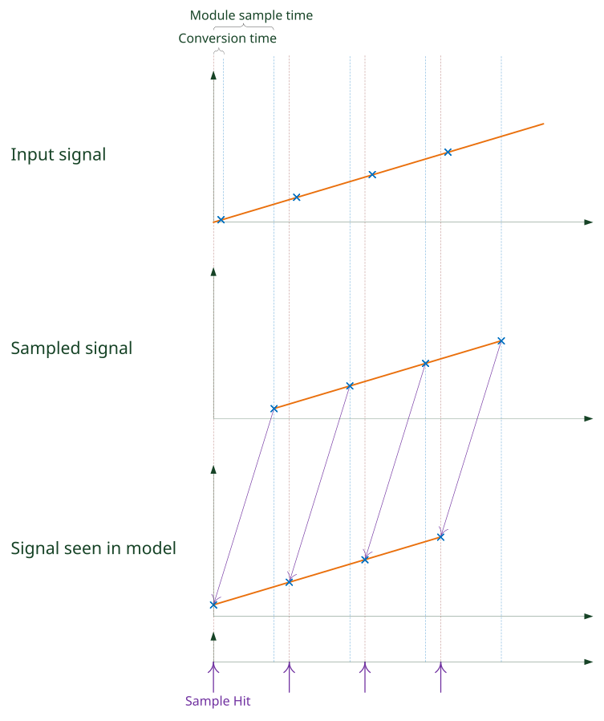
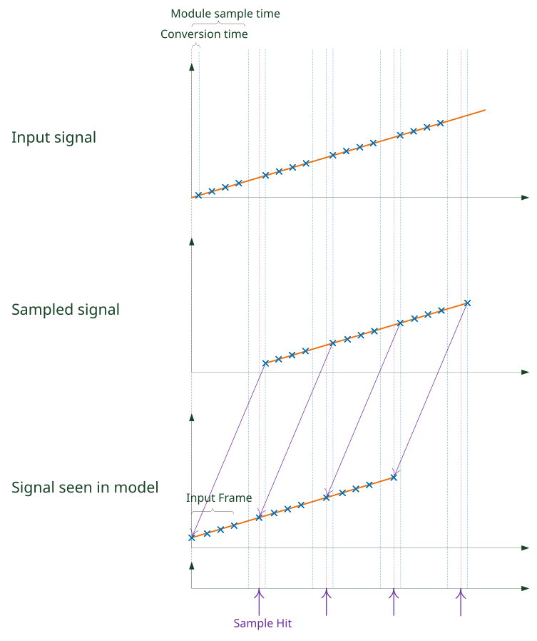
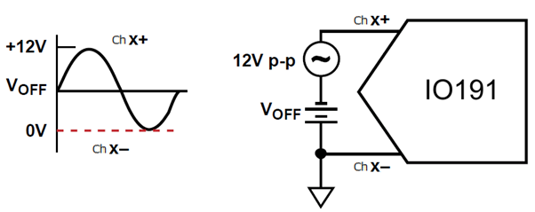
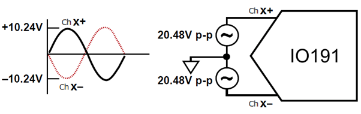

IO191 Usage Notes — Usage information about the I/O module
The IO191 I/O module can be configured to use up to eight single-ended or four pairs of channels (differential mode) and can operate up to 250,000 samples per second (SPS). The sample rate depends on the number of Active Channels (the sample rate is aggregate) and the sampling mode (non-DMA or DMA).
For non-DMA, the IO191 is configured for manual sampling. A conversion is triggered by the driver block on every sample hit.
For DMA, with eight or four channels in single-ended or differential mode, respectively, the maximum sample rate is 31.25 kSPS for each channel. If only one channel in single-ended or differential mode is activated, the maximum sample rate is 250 kSPS.
The IO191 uses sequential sampling as the ADC sample the channels successively.
This note shows the difference between the non-DMA and DMA operation modes of the Analog input block.
Non-DMA
If the IO191 operates in non-DMA, a conversion starts with the driver block generating a Sample Hit. The driver block waits for the module to finish the conversion of the Active Channels before reading the value and then starting a new conversion.

DMA
If the IO191 operates in DMA, conversions will occur at the rate configurated on the ADC Rate (the sample rate is divided by the number of channels selected). The driver block reads the latest frame data (Active Channels * Frame Size) from the module on every Sample Hit. The Sample Hit are DMA interrupts generated by the module. When the module sample time does not accord with the block sample time, this can cause signal deformation.

If DMA is enabled for Analog inputs, the model or the asynchronous subsystem where the module is located has to be triggered by the module's interrupt. The module's interrupt is necessary so the sample hits of the blocks are synchronous to the module's DMA engine.
In DMA mode, the model must contain an Interrupt Setup block that triggers a subsystem or the model. Refer to the block documentation for more information.
The IO191 uses the ADAS3022 which incorporates a programmable gain instrumentation amplifier with seven selectable ranges (±0.64 V, ±1.28 V, ±2.56 V, ±5.12 V, ±10.24 V, ±20.48 V and, ±24.576 V), enabling the use of almost any direct sensor interface. The input range settings are specified in terms of the maximum absolute differential input voltage across a pair of inputs (for example, Ch 1+ to Ch 1−). Note that because the IO191 can use any input type, such as differential or single-ended, setting the mode is important to make full use of the input span available.
These usage notes provide some examples of setting the mode in differential to be able to use ±20.48 V or ±24.576 V. Note that the ADAS3022 always calculates the difference between the Ch # + and Ch # − signals.
Example: Differential signals with a non-zero DC offset
When a 12 V p-p signal with a 3 V DC level-shift is connected to one channel (Ch x +) and the DC ground sense of the signal is connected to Ch x−, the input range configuration is set to a ±20.48 V or ±24.576 V range because the maximum differential voltage across the inputs is 12 V p-p and only half the codes available for the transfer function are used.

Example: Antiphase signals with a zero common
With a pair of 20.48 V p-p differential antiphase signals in zero-common mode, when the input range configuration is set to ±20.48 V or ±24.576 V, the maximum differential voltage across the inputs is ±20.48 V.
